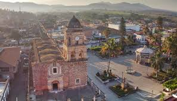
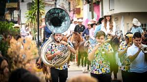
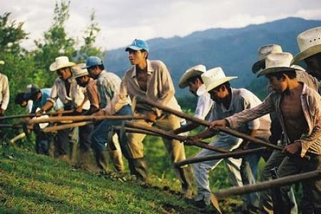

Compostela se encuentra en el suroeste del estado de Nayarit, México. Está rodeado de montañas, ríos y costa. Limita al norte con San Blas y Xalisco, al este con Santa María del Oro y al sur con Bahía de Banderas y el estado de Jalisco. Su geografía variada le da una gran diversidad de paisajes naturales y atractivos turísticos.
Una de las celebraciones más importantes es la de la Virgen de la Candelaria, el 2 de febrero. Durante esta festividad hay procesiones religiosas, danzas folclóricas, fuegos artificiales y feria. Otras fechas importantes incluyen la Semana Santa, las fiestas patrias en septiembre y el Día de Muertos en noviembre, con altares y tradiciones populares.
La economía de Compostela se basa en la agricultura, ganadería, pesca y turismo. Se cultivan caña de azúcar, mango, plátano, maíz, café y chile. En zonas costeras también se practica la pesca artesanal. La producción de café de altura en comunidades como Jaltepec ha ganado reconocimiento por su sabor y calidad.
